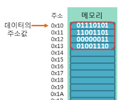

08. 포인터 (Pointer): 메모리 주소와 보물지도
1. 포인터란 무엇인가요?
포인터는 데이터 자체가 아니라, 데이터가 저장된 '메모리 주소'를 가리키는 변수입니다. 마치 보물이 들어있는 상자가 아니라, 그 상자가 어디 있는지 알려주는 보물지도와 같습니다.

▲ 포인터: "데이터가 어디 있지?" 주소를 찾아가는 나침반
2. 🗺️ 창의적 예제: 보물찾기 (주소 연산)
#include <stdio.h>
int main() {
int gold = 1000; // 실제 금 상자
int *map = &gold; // 금 상자의 위치를 기록한 지도 (포인터)
printf("상자의 실제 내용물: %d골드\n", gold);
printf("상자의 위치(주소값): %p\n", map);
printf("지도를 보고 찾아간 내용물: %d골드\n", *map);
return 0;
}💡 핵심 기호 정리
& (주소 연산자): 변수의 주소를 알아낼 때 씁니다. (상자의 위치 찾기)
* (참조 연산자): 주소로 가서 실제 값을 가져올 때 씁니다. (지도를 보고 보물 꺼내기)